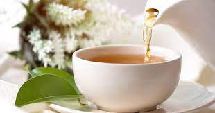

Types and Varieties of Herbal Teas For Beverages and Medicinal Teas
What is herbal tee?
The term herbal tea or herb tea refers only to hot-water infusions made from any plant other than Camellia Sinensis. Some tea connoisseurs oppose the use of "tea," which refers to herbal teas. This is because herbal teas don't contain any tea. These tea lovers often advocate for the usage of the term “tisane” or the informal and formal-sounding name herbal infusion. But the term "herbal" is still in common use and we will use this term here.
Herbal teas come in many flavors and aromas. bioft tea benefits There are generally two kinds of herbal teas. One is used primarily for beverages, the other is used primarily medicinally. There is often overlap between these two groups. Nearly all herbs that are used as drinks have powerful health benefits. Sometimes, however, it can be difficult to distinguish between medicine and beverage.

These are the top-selling types of herbal tees:
Mint is a favorite herb for making a refreshing beverage or blending it with other herbs. There are many kinds of mint. Two of the most popular are spearmint, and peppermint. Another important mint that is grown in temperate plants around the world is apple mint.
The popular lemon-scented herbs make for great herbal teas. If infused with hot water, lemongrass makes a great drink. It is used in Thai, Vietnamese, and many other cuisines. Other lemon-scented herbs are lemon balm (native to Australia), lemon verbena and lemon verbena. Although they are not related to lemon or each other, the lemon-scented plants share some common aroma chemicals. Citral, which has been investigated for its potential to fight cancer, is among these lemony chemicals.
Relaxing Herbs, Chamomile, Tulsi, & Other:
Chamomile, one of the most famous herbs, is a bedtime beverage that is loved for its relaxing effects. Tulip is another important relaxing herb, though it's less well known in the West. Tulsi is also known as holy Basil and it's a variety of basil from India that has a spicy, clove-like fragrance. Both tulsi (and chamomile) have been shown in studies to promote relaxation. Additionally, both herbs are known to lower blood glucose, which can help prevent or manage type 2 diabetes. Tulsi can also be used to treat anxiety and improve the immune system.
These are just two of many herbs that can promote relaxation. Relaxing herbal teas without caffeine are generally considered relaxing. A few herbs that help with anxiety are lemon balm and passionflower.
Rooibos & Honeybush:
Without mentioning honeybush (and rooibos), herbal teas are incomplete without mentioning honeybush. Both plants are South African natives. These two plants make herbal teas that don't contain caffeine. Biofit tea They are more like black-tea in flavor and aroma than infusions with any other herbs. Rooibos is known for its medicinal properties. Although honeybush has not been extensively studied, it does have similar properties. Both honeybush as well as rooibos can be produced in green and red varieties. As they are both produced in the same manner, green honeybush is similar to green rooibos.